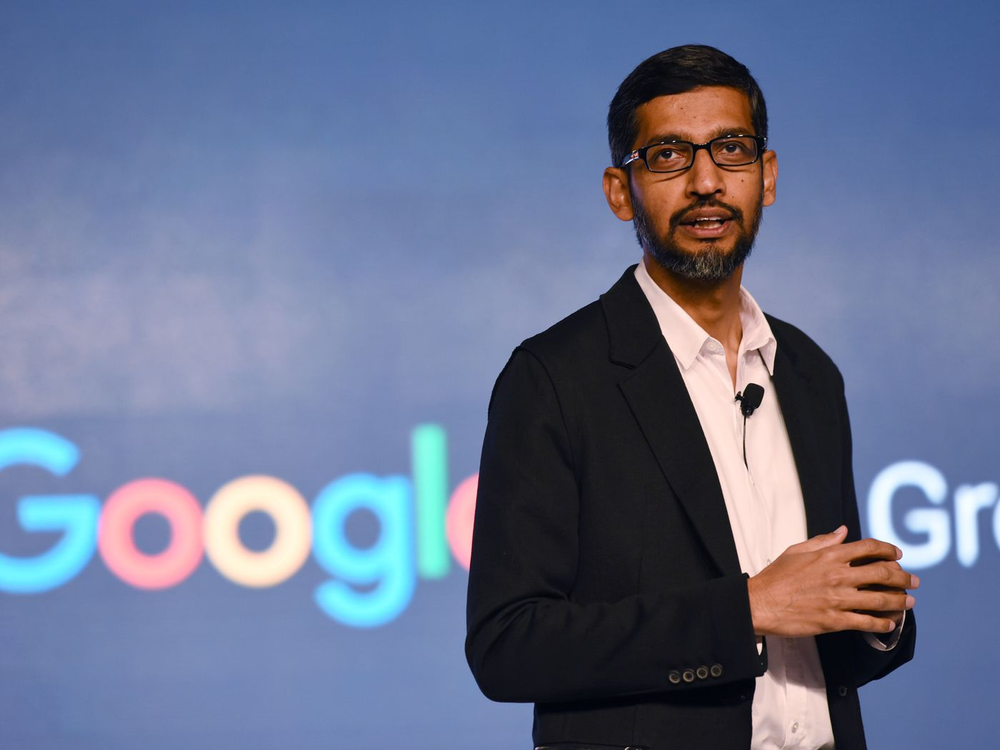

Sundar Pichai
Born:10 June 1972
Chief Executive Officer of Google
EARLY LIFE
Pichai was born in Madurai,Tamilnadu,India.His mother,Lakshmi,was a stenographer,and his father,Regunatha Pichai,was an electrical engineer at GEC,the British conglomerate.His father also had a manufacturing plant that produced electrical components
POSITIONS HELD BY Pichai
- Pichai worked in engineering and product management at Applied Materials and in management consulting at McKinsey & Company.
- Pichai joined Gooogle in 2014,where he led the product management as well as being largely responsible for Google drive.
- He was a director of Jive Software from April 2011 to July 30,2013.
- Pichai was a speaker at the World Internet Conference in China.
- In December 2019,Pichai became the CEO of Alphanet.Inc
- Pichai was announced as the new CEO of Google in 2015
AWARDS AND RECOGNITION
- In 2022,Pichai received the Padma Bhushan from the Government of India
- Its third highest civilian award.